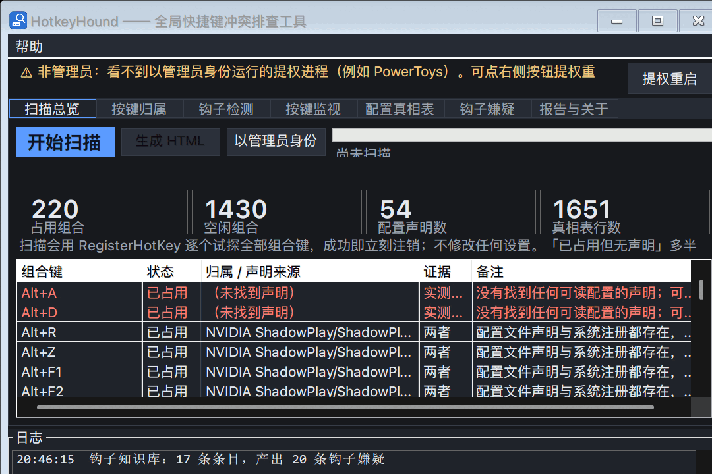
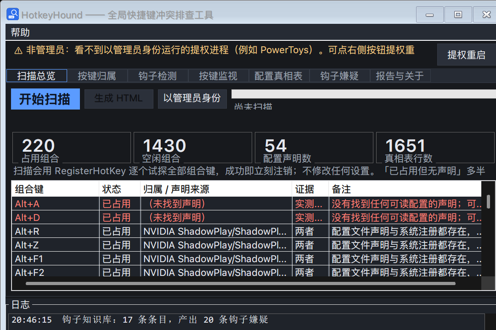
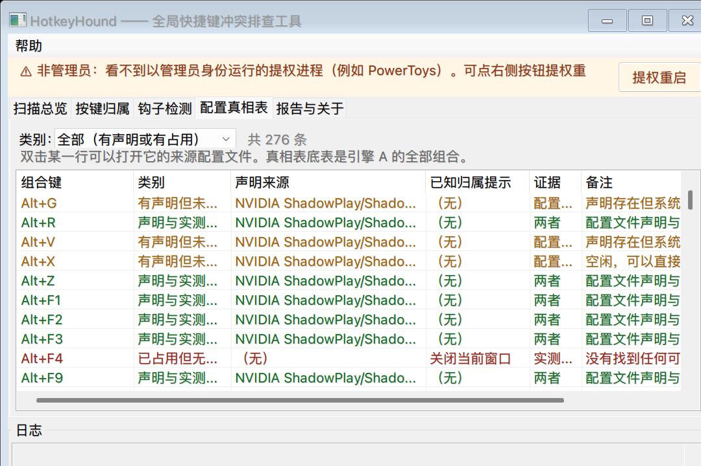

查清楚是谁偷走了你的快捷键——并且拿出证据。
Find out who stole your keyboard shortcut — and prove it.
单文件可执行、无需安装 .NET（Win10/11 自带 4.8）· MIT 开源 · 中英双语
One executable, no .NET install needed (Windows 10/11 ship 4.8) · MIT · bilingual

某个程序的 RegisterHotKey 先注册了它。HotkeyHound 逐一试探全部约 1650 个组合，报出哪些已被占用。
Some application got there first with RegisterHotKey. HotkeyHound probes all ~1650 combinations and reports which are taken.
按键在到达系统之前被键盘钩子吃掉（PowerToys 键盘管理器、输入法、宏工具）。这类热键永远不注册，扫描看不见——所以我们专门检测它。
A keyboard hook eats the key before it reaches Windows (PowerToys Keyboard Manager, input methods, macro tools). Those never register, so a scan cannot see them — so we detect them directly.
组合本来就空闲，问题在别处（软件本身、游戏内绑定、键盘硬件）。知道"没人占用"本身就是有效结论。
The combination is free and the problem is elsewhere (the app itself, an in-game binding, the keyboard). Knowing that is already an answer.
约 1650 个组合逐一 RegisterHotKey 试探，成功即刻注销，零副作用。
~1650 combinations probed with RegisterHotKey, released in the same instant. No side effects.
注入原生钩子，报出是哪个进程收到了热键；也可选中批量自动归属（默认 dry-run）。
A native hook reports which process received the hotkey; opt-in batch attribution available (dry-run by default).
低层键盘钩子 + 四分支判定，区分"没到系统""到了但没送达""已确认送达"。
Low-level hook plus a four-way verdict: never reached the system / reached it but not delivered / delivered.
读 PowerToys、输入法、QQ/微信、AutoHotkey、厂商工具等的配置，给出带证据等级的嫌疑清单与配置路径。
Reads configs of PowerToys, input methods, QQ/WeChat, AutoHotkey, vendor utilities — suspects carry an evidence level and the config path.
| HotkeyScan | Hotkey Screener | Hotkey Detective | HotkeyHound | |
|---|---|---|---|---|
| 列出已占用组合 | 761 | 已注册项 | — | 1650 |
| 已注册热键的归属 | 屏幕变化推断 | 钩子+模拟按键 | 钩子，你手按 | 钩子，你手按 / 可选批量 |
| 被钩子吞掉的键 | 仅当有可见变化 | 官方承认看不到 | 官方承认看不到 | 专门检测 + 知识库 |
| 解释"为什么被占" | 读四类配置 | — | — | 六类软件 + 配置路径 |
| 按键监视（卡住的修饰键/重映射/驱动） | 有 | — | — | 1.2.0 起有 |
| 32 位进程 | 仅 64 | 32+64 | x86/x64 | x64 + x86（1.3.0 起） |
| 可交给别人的报告 | — | — | — | 自包含 HTML，双语 |
我们不是"最强"，而是"最可解释"：每条结论都带证据等级与来源。钩子型与应用内快捷键任何工具都列不全——Windows 不把它们放进任何表里。
Not "the best" — the most explainable: every conclusion carries an evidence level and its source. No tool can list hook-based or in-app shortcuts, because Windows keeps them out of every table.


HotkeyHound.exe --scan --report out.html # engines A + D → HTML report HotkeyHound.exe --listen --seconds 60 # attribution console (engine B) HotkeyHound.exe --attribute-all --dry-run # plan batch attribution, press nothing HotkeyHound.exe --monitor --seconds 10 # key monitor: raw / hook / window layers HotkeyHound.exe --selftest --no-hooks # self-test without touching hooks HotkeyHound.exe --lang en --scan --report en.html # English output